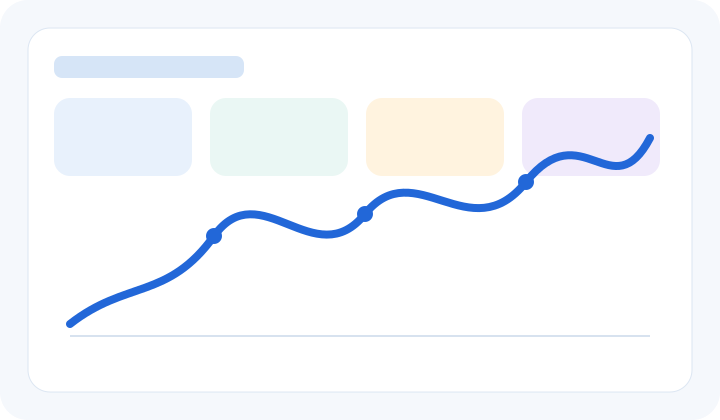

Salesforce Development
ApexLightning Web ComponentsAura ComponentsVisualforceTriggersBatch ApexQueueable ApexScheduled ApexSOQLSOSLTest Classes
Organized around the practical platform capabilities I use to develop, connect, secure, test, govern, and support modern Salesforce solutions.

My verified experience is strongest in Salesforce platform development rather than a claimed production Agentforce implementation. That background directly supports AI projects through reliable data, automation, APIs, security, testing, governance, release controls, and stakeholder-facing documentation.